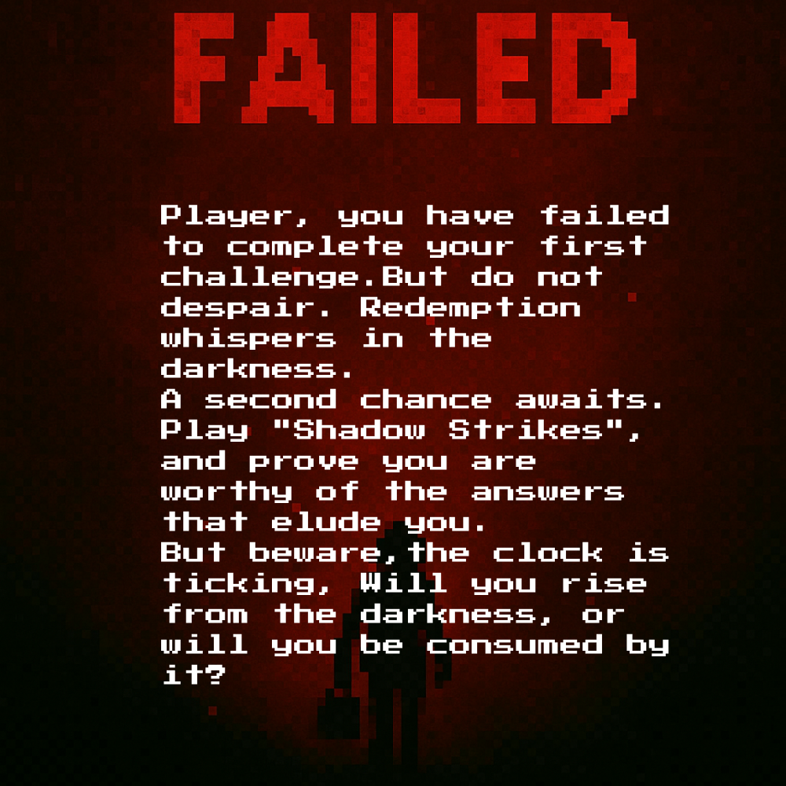
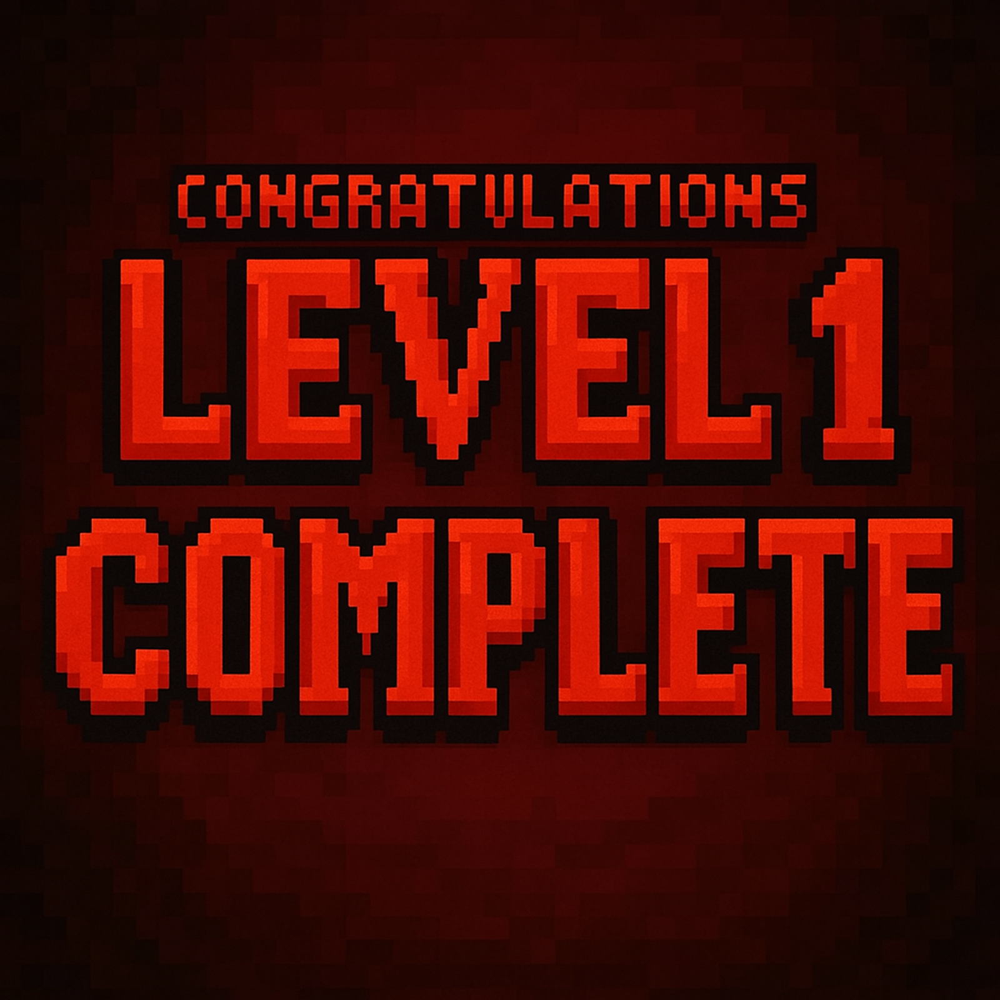
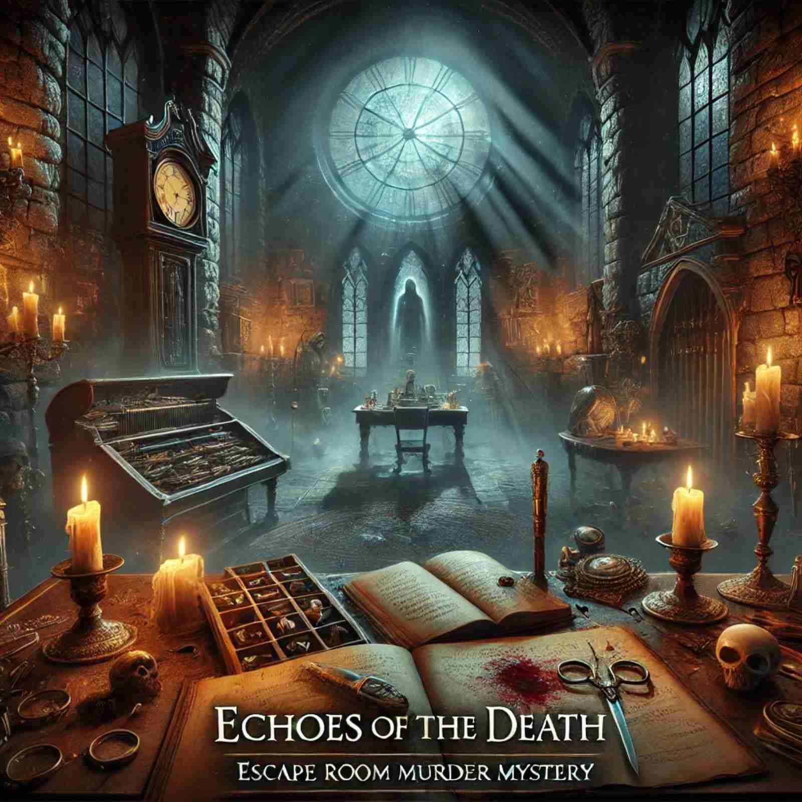

Echoes of Death
Developed an interactive story-driven game/quiz using C++, where players navigate through a narrative and answer questions to progress.
Technologies Used: C++
Role: Sole developer/designer
Achievements: This project helped me develop strong skills in C++ programming, including problem-solving, logic, and software development.
GitHub Link for My Project Available Upon Request


